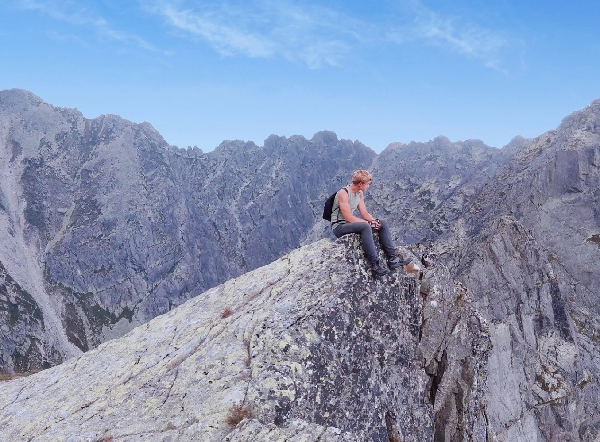

Szachy
Spokojna rywalizacja
Kiedyś grałem w szachy bardziej na serio i brałem udział w konkursach, dziś gram raczej dla przyjemności. Dalej lubię to za myślenie do przodu, cierpliwość i spokojną rywalizację.
Poza pracą raczej nie siedzę w miejscu. Lubię ruch, podróże i różne doświadczenia, szczególnie takie, gdzie nie ma planu i trzeba działać. Wychowałem się w dużej rodzinie, mam czwórkę rodzeństwa, więc od zawsze było dynamicznie i trzeba było ogarniać sprawy na bieżąco.


Byłem na Bałtyku i Morzu Śródziemnym, mam kurs SRC i kończę patent na pływanie po morzu. To jedna z tych rzeczy, gdzie naprawdę czujesz odpowiedzialność i uczysz się podejmować decyzje w praktyce.

Szczególnie Tatry, ale lubię też wyjazdy dalej. Byłem w Maroku i wszedłem na najwyższy szczyt Afryki Północnej, ponad 4000 m. Lubię takie wyjazdy, gdzie coś się dzieje, a nie tylko ładne widoki.
Przejechałem dziesiątki tysięcy kilometrów. Spałem u losowo poznanych ludzi, w namiotach, w hamaku, na dziko na pustyni w Jordanii i nawet w centrum Paryża. Z części wyjazdów nagrałem vlogi. To były doświadczenia, które naprawdę uczą radzenia sobie w każdej sytuacji.


Od zawsze było tego sporo
Sport zawsze był dużą częścią mojego życia. Trenowałem różne rzeczy, od tenisa i waterpolo po sporty walki i trójbój. Dziś bardziej dla siebie, ale dalej lubię regularny ruch i rywalizację.
Interesuje mnie motoryzacja, lubię auta i silniki. Złożyłem sam minicrossa, czasem coś naprawiam, jak ogarnę temat. Bardziej zajawka niż teoria.
Spokojna rywalizacja
Kiedyś grałem w szachy bardziej na serio i brałem udział w konkursach, dziś gram raczej dla przyjemności. Dalej lubię to za myślenie do przodu, cierpliwość i spokojną rywalizację.
XIX i XX wiek
Interesuje mnie historia, głównie XIX i XX wiek. Lubię patrzeć, jak decyzje ludzi, konflikty i procesy społeczne wpływały na to, jak wyglądał świat później.